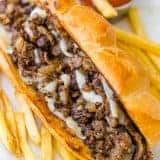

Cheese Steak Sando Recipe

Description
This is the recipe for a classic Cheese Steak Sandwhich. This recipe will walk you through the whole process of making a Cheese Steak Sandwhich
Ingredients
- 1 pound of steak
- 1 large yellow onion
- Kikkoman Soysauce
- Fresh rolls
- 1 pound of white american cheese
- Garlic and onion powder
Steps
- Heat a pan over medium heat with butter inside the pan
- Add onions to the pan and cook them until they are clear
- Slice the steak into thin pieces
- Season the steak with garlic and onion powder. Add soysauce and allow it to marinate for 15 minutes
- Add steak to pan and cook to perfered temperature
- Once steak is done, add the onions back to the pan
- Cut rolls in half. Add cheese to each side and toast until cheese is melted
- Add steak and onions to the bun and enjoy!
Return to Home Page